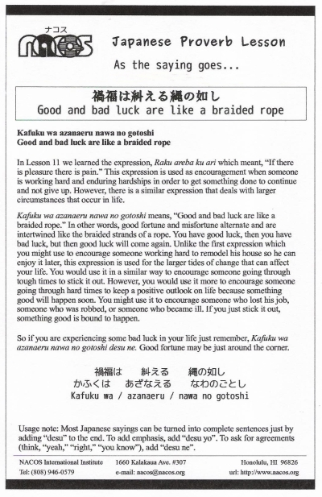

Kafuku wa azanaeru nawa no gotoshi
Good and bad luck are like a braided rope
In Lesson 11 we learned the expression, Raku areba ku ari which meant, “If there is pleasure there is pain.” This expression is used as encouragement when someone is working hard and enduring hardships in order to get something done to continue and not give up. However, there is a similar expression that deals with larger circumstances that occur in life.
Kafuku wa azanaeru nawa no gotoshi means, “Good and bad luck are like a braided rope.” In other words, good fortune and misfortune alternate and are intertwined like the braided strands of a rope. You have good luck, then you have bad luck, but then good luck will come again. Unlike the first expression which you might use to encourage someone working hard to remodel his house so he can enjoy it later, this expression is used for the larger tides of change that can affect your life. You would use it in a similar way to encourage someone going through tough times to stick it out. However, you would use it more to encourage someone going through hard times to keep a positive outlook on life because something good will happen soon. You might use it to encourage someone who lost his job, someone who was robbed, or someone who became ill. If you just stick it out, something good is bound to happen.
So if you are experiencing some bad luck in your life just remember, Kafuku wa azanaeru nawa no gotoshi desu ne. Good fortune may be just around the corner.
Usage note: Most Japanese sayings can be turned into complete sentences just by adding “desu” to the end. To add emphasis, add “desu yo”. To ask for agreements (think, “yeah,” “right,” “you know”), add “desu ne”.

| © 1995-2013 NACOS International Institute. All Rights Reserved. |